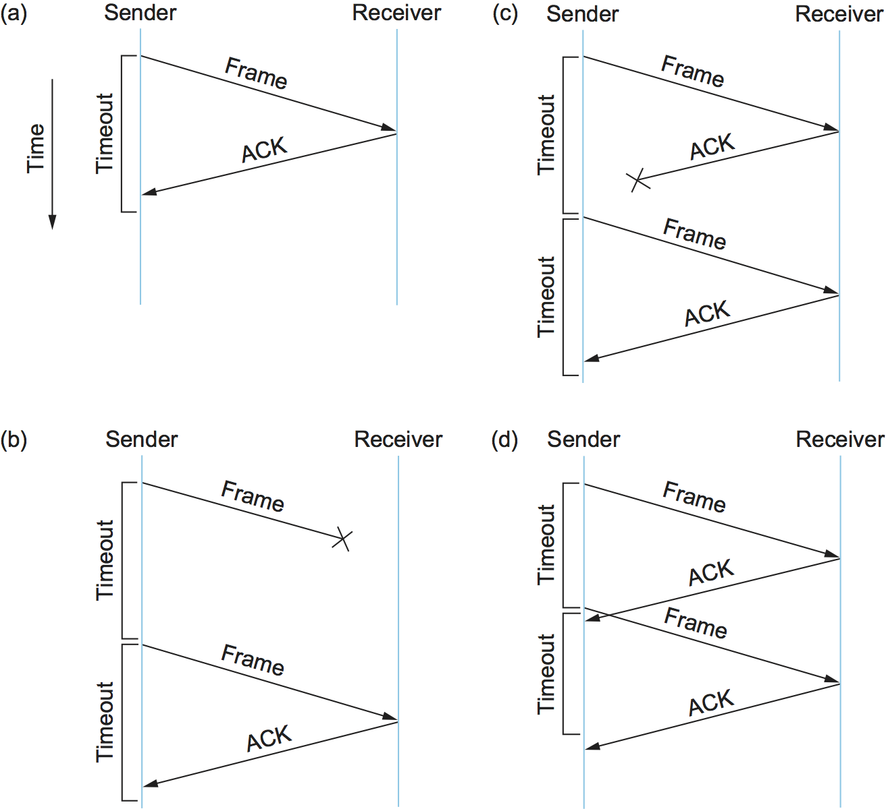
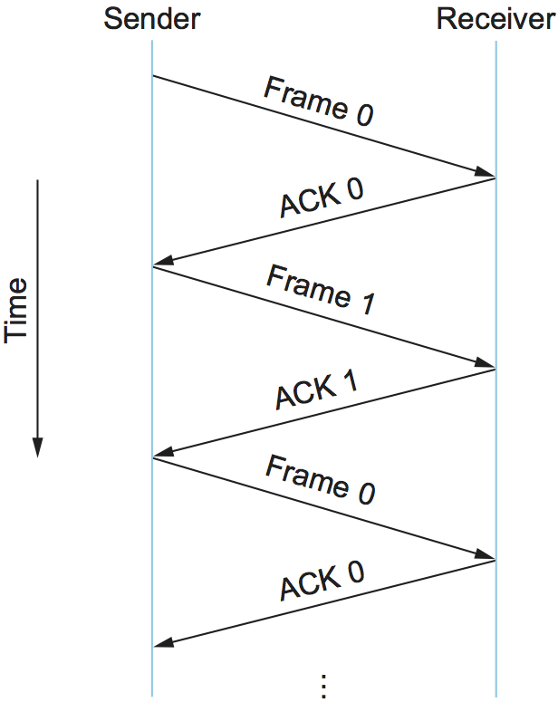
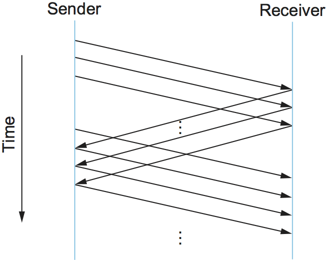
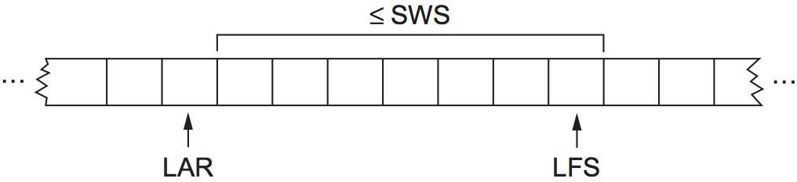
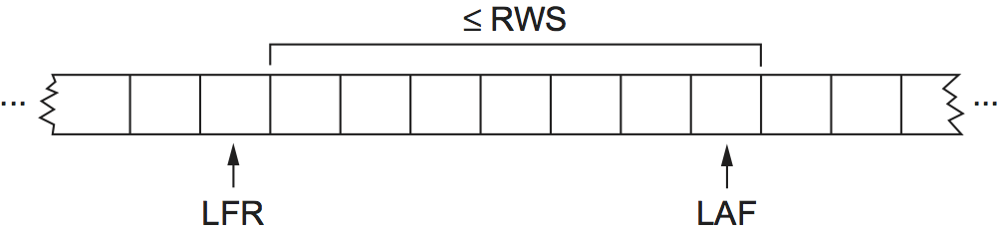

2.5 신뢰성 있는 전송
앞 절에서 살펴보았듯이, 프레임은 전송 도중 때때로 손상되며 CRC와 같은 오류 부호를 사용해 이러한 오류를 검출한다. 일부 오류 부호는 오류를 정정할 만큼 충분히 강력하지만, 실제로는 그 오버헤드가 네트워크 링크에서 발생할 수 있는 비트 오류와 버스트 오류의 범위를 감당하기에 너무 큰 경우가 많다. 오류 정정 부호를 사용하더라도(예: 무선 링크) 어떤 오류는 너무 심해 정정할 수 없다. 따라서 일부 손상된 프레임은 버려져야 한다. 프레임을 신뢰성 있게 전달하려는 링크 수준 프로토콜은 이렇게 폐기된(즉, 손실된) 프레임에서 어떻게든 복구해야 한다.
신뢰성은 링크 수준에서 제공될 수도 있는 기능이지만, 많은 현대 링크 기술은 이 기능을 생략한다. 더 나아가 신뢰성 있는 전달은 전송 계층은 물론 때로는 응용 계층 등 더 높은 수준에서 제공되는 경우가 많다. 정확히 어디에서 제공해야 하는지는 논쟁의 여지가 있으며 많은 요인에 달려 있다. 여기서는 계층 전반에 공통되는 원리를 설명하기 위해 신뢰성 있는 전달의 기초를 다루지만, 이것이 단지 링크 계층 기능만을 말하는 것은 아니라는 점을 알아두어야 한다.
신뢰성 있는 전달은 보통 두 가지 기본 메커니즘, 즉 확인 응답과 타임아웃의 조합으로 구현된다. 확인 응답(줄여서 ACK)은 프로토콜이 상대에게 이전 프레임을 수신했음을 알리기 위해 되돌려 보내는 작은 제어 프레임이다. 여기서 제어 프레임이란 데이터가 없는 헤더만을 뜻하지만, 프로토콜은 반대 방향으로 보내는 데이터 프레임에 ACK를 피기백하여 실을 수도 있다. 확인 응답을 받았다는 것은 원래 프레임의 송신자에게 그 프레임이 성공적으로 전달되었음을 의미한다. 송신자가 적절한 시간이 지난 뒤에도 확인 응답을 받지 못하면 원래 프레임을 재전송한다. 이처럼 적절한 시간 동안 기다리는 동작을 타임아웃이라고 한다.
확인 응답과 타임아웃을 사용해 신뢰성 있는 전달을 구현하는 일반적인 전략은 흔히 자동 재전송 요구(automatic repeat request, ARQ)라고 부른다. 이 절에서는 특정 프로토콜의 헤더 필드를 자세히 다루기보다는 일반적인 용어를 사용해 세 가지 ARQ 알고리즘을 설명한다.
2.5.1 정지-대기
가장 단순한 ARQ 방식은 정지-대기(stop-and-wait) 알고리즘이다. 정지-대기의 아이디어는 간단하다. 한 프레임을 전송한 뒤 송신자는 다음 프레임을 전송하기 전에 확인 응답을 기다린다. 일정 시간이 지나도 확인 응답이 도착하지 않으면 송신자는 타임아웃이 발생했다고 판단하고 원래 프레임을 재전송한다.
{kind=link}

그림 34. 정지-대기 알고리즘의 네 가지 서로 다른 상황을 보여 주는 타임라인. (a) 타이머가 만료되기 전에 ACK가 도착함; (b) 원래 프레임이 손실됨; (c) ACK가 손실됨; (d) 타임아웃이 너무 일찍 발생함.
그림 34는 이 기본 알고리즘에서 생길 수 있는 네 가지 상황의 타임라인을 보여 준다. 송신 측은 왼쪽에, 수신 측은 오른쪽에 표시되어 있으며 시간은 위에서 아래로 흐른다. 그림 34(a)는 타이머가 만료되기 전에 ACK가 도착하는 경우를 보여 주고, (b)와 (c)는 각각 원래 프레임과 ACK가 손실되는 경우를, (d)는 타임아웃이 너무 일찍 발생하는 경우를 보여 준다. 여기서 “손실되었다”는 말은 프레임이 전송 도중 손상되었고, 이 손상이 수신 측의 오류 부호에 의해 검출되었으며, 그 결과 프레임이 폐기되었다는 뜻임을 기억하자.
이 절에 나오는 패킷 타임라인은 프로토콜을 가르치고 설명하며 설계할 때 자주 쓰이는 도구의 예이다. 이 도구가 유용한 이유는 분산 시스템의 시간에 따른 동작을 시각적으로 포착해 주기 때문이다. 이런 동작은 분석하기가 상당히 어려울 수 있다. 프로토콜을 설계할 때는 예상치 못한 상황에 대비해야 하는 경우가 많다. 시스템이 충돌할 수도 있고, 메시지가 손실될 수도 있으며, 빠르게 일어날 것으로 기대했던 일이 실제로는 오래 걸릴 수도 있다. 이런 종류의 도표는 이러한 상황에서 무엇이 잘못될 수 있는지를 이해하도록 도와주며, 결국 프로토콜 설계자가 어떤 경우에도 대비할 수 있게 해 준다.
정지-대기 알고리즘에는 중요한 미묘함이 하나 있다. 송신자가 프레임을 보내고 수신자가 이를 확인했지만, 그 확인 응답이 손실되거나 도착이 지연되었다고 가정해 보자. 이 상황은 그림 34의 (c)와 (d) 타임라인에 나타나 있다. 두 경우 모두 송신자는 타임아웃이 발생해 원래 프레임을 재전송하지만, 수신자는 첫 번째 프레임을 이미 올바르게 수신하고 ACK를 보냈기 때문에 그것을 다음 프레임이라고 생각하게 된다. 그러면 동일한 프레임의 복사본이 중복 전달될 가능성이 생긴다. 이 문제를 해결하기 위해 정지-대기 프로토콜의 헤더에는 보통 1비트 순서 번호가 포함된다. 즉, 순서 번호는 0과 1의 값을 가질 수 있으며 각 프레임에 사용하는 순서 번호는 그림 35와 같이 번갈아 나타난다. 따라서 송신자가 프레임 0을 재전송할 때 수신자는 그것이 프레임 1의 첫 번째 사본이 아니라 프레임 0의 두 번째 사본임을 알 수 있고, 따라서 이를 무시할 수 있다(다만 첫 번째 ACK가 손실되었을 경우에 대비해 수신자는 여전히 ACK를 보낸다).
{kind=link}

그림 35. 1비트 순서 번호를 사용하는 정지-대기 타임라인.
정지-대기 알고리즘의 가장 큰 단점은 송신자가 한 번에 링크 위에 하나의 미확인 프레임만 둘 수 있다는 점이며, 이는 링크 용량보다 한참 낮을 수 있다. 예를 들어 왕복 시간이 45ms인 1.5Mbps 링크를 생각해 보자. 이 링크의 지연 × 대역폭 곱은 67.5Kb, 즉 약 8KB이다. 송신자는 RTT마다 프레임 하나만 보낼 수 있고 프레임 크기가 1KB라고 가정하면, 최대 전송률은 다음과 같다.
Bits-Per-Frame / Time-Per-Frame = 1024 x 8 / 0.045 = 182 kbps
즉, 링크 용량의 약 8분의 1에 불과하다. 따라서 링크를 완전히 활용하려면 송신자가 확인 응답을 기다리기 전에 최대 8개의 프레임을 전송할 수 있어야 한다.
핵심 요점
지연 × 대역폭 곱이 중요한 이유는 그것이 전송 중일 수 있는 데이터의 양을 나타내기 때문이다. 우리는 첫 번째 확인 응답을 기다리지 않고도 이만큼의 데이터를 보낼 수 있기를 원한다. 여기서 작동하는 원리는 흔히 파이프를 가득 채운 상태로 유지하기라고 불린다. 다음 두 하위 절에서 소개하는 알고리즘이 바로 이를 수행한다. [다음]
2.5.2 슬라이딩 윈도우
링크의 지연 × 대역폭 곱이 8KB이고 프레임 크기가 1KB인 상황을 다시 생각해 보자. 우리는 첫 번째 프레임의 ACK가 도착하는 바로 그 순간쯤에 송신자가 아홉 번째 프레임을 전송할 준비가 되어 있기를 원한다. 이를 가능하게 하는 알고리즘을 슬라이딩 윈도우라고 하며, 그 예시 타임라인은 그림 36에 나와 있다.
{kind=link}

그림 36. 슬라이딩 윈도우 알고리즘의 타임라인.
슬라이딩 윈도우 알고리즘
슬라이딩 윈도우 알고리즘은 다음과 같이 동작한다. 먼저 송신자는 각 프레임에
SeqNum으로 표기되는 순서 번호를 부여한다. 우선은
SeqNum이 크기가 유한한 헤더 필드로 구현된다는 사실은 무시하고, 무한히 커질 수 있다고 가정하자.
송신자는 세 개의 변수를 유지한다. SWS로 표기되는 송신 윈도우 크기는
송신자가 전송할 수 있는 미해결(즉, 아직 ACK를 받지 못한) 프레임 수의 상한을 나타낸다.
LAR은 마지막으로 수신한 확인 응답의 순서 번호를, LFS는
마지막으로 전송한 프레임의 순서 번호를 나타낸다. 송신자는 또한 다음의 불변식을 유지한다.
LFS - LAR <= SWS
이 상황은 그림 37에 나타나 있다.
{kind=link}

그림 37. 송신자 측의 슬라이딩 윈도우.
확인 응답이 도착하면 송신자는 LAR을 오른쪽으로 이동시켜 다른 프레임을 하나 더 전송할 수 있게 된다.
또한 송신자는 자신이 전송하는 각 프레임에 타이머를 연결하며, ACK를 받기 전에 타이머가 만료되면 그 프레임을
재전송한다. 송신자는 최대 SWS개의 프레임을 버퍼링할 준비가 되어 있어야 한다는 점에 유의하자.
ACK를 받을 때까지 이를 재전송할 수 있어야 하기 때문이다.
수신자는 다음 세 개의 변수를 유지한다. RWS로 표기되는 수신 윈도우 크기는
수신자가 받아들일 의사가 있는 순서가 어긋난 프레임 수의 상한을 나타낸다. LAF는
수용 가능한 가장 큰 프레임의 순서 번호를, LFR은
마지막으로 수신한 프레임의 순서 번호를 나타낸다. 수신자는 또한 다음의 불변식을 유지한다.
LAF - LFR <= RWS
이 상황은 그림 38에 나타나 있다.
{kind=link}

그림 38. 수신자 측의 슬라이딩 윈도우.
순서 번호 SeqNum인 프레임이 도착하면 수신자는 다음과 같이 동작한다.
만약 SeqNum <= LFR 또는 SeqNum > LAF이면,
그 프레임은 수신자의 윈도우 밖에 있으므로 폐기된다. 만약
LFR < SeqNum <= LAF이면 프레임은 수신자의 윈도우 안에 있으므로 수용된다.
이제 수신자는 ACK를 보낼지 말지를 결정해야 한다. SeqNumToAck를 아직 ACK하지 않은
가장 큰 순서 번호라고 하자. 단, 그보다 작거나 같은 모든 순서 번호의 프레임은 이미 수신되었다고 가정한다.
수신자는 더 큰 번호의 패킷을 이미 받았더라도 SeqNumToAck의 수신을 ACK한다.
이러한 ACK를 누적 확인 응답이라고 한다. 그런 다음
LFR = SeqNumToAck로 설정하고
LAF = LFR + RWS로 조정한다.
예를 들어 LFR = 5라고 하자(즉, 수신자가 마지막으로 보낸 ACK는 순서 번호 5에 대한 것이었다).
그리고 RWS = 4라고 하자. 그러면 LAF = 9가 된다.
프레임 7과 8이 도착하면 이들은 수신자 윈도우 안에 있으므로 버퍼에 저장된다. 하지만 프레임 6이 아직 도착하지 않았기 때문에
ACK를 보낼 필요는 없다. 프레임 7과 8은 순서가 어긋나 도착한 것으로 간주된다. (엄밀히 말하면 수신자는 프레임 7과 8이
도착했을 때 프레임 5에 대한 ACK를 다시 보낼 수도 있다.) 이후 프레임 6이 도착하면, 처음에 손실되어 재전송되었기 때문에
늦게 온 것일 수도 있고 단순히 지연되었을 수도 있다. 수신자는 프레임 8을 ACK하고 LFR을 8로 올리며
LAF를 12로 설정한다.[1]
만약 실제로 프레임 6이 손실되었다면 송신자에서는 타임아웃이 발생해 프레임 6을 재전송했을 것이다.
타임아웃이 발생하면 전송 중인 데이터의 양이 줄어든다는 점을 알 수 있다. 프레임 6에 대한 ACK가 올 때까지 송신자가 자신의 윈도우를 앞으로 이동시킬 수 없기 때문이다. 즉, 패킷 손실이 발생하면 이 방식은 더 이상 파이프를 가득 채운 상태를 유지하지 못한다. 패킷 손실이 일어났음을 알아차리는 데 시간이 오래 걸릴수록 이 문제는 더 심각해진다.
또한 이 예에서는 프레임 7이 도착하자마자 수신자가 프레임 6에 대해 부정 확인 응답(NAK)을 보낼 수도 있었다. 하지만 송신자의 타임아웃 메커니즘만으로도 이 상황을 감지하기에 충분하므로 이는 불필요하며, NAK를 보내면 수신자에 추가 복잡성이 생긴다. 또한 앞에서 언급했듯이 프레임 7과 8이 도착했을 때 프레임 5에 대한 추가 ACK를 보내는 것도 정당한 동작이었을 것이다. 어떤 경우에는 송신자가 중복 ACK를 프레임 손실의 단서로 사용할 수 있다. 두 접근법 모두 패킷 손실을 더 일찍 감지하게 해 성능 향상에 도움을 준다.
이 방식의 또 다른 변형으로는 선택적 확인 응답을 사용할 수 있다. 즉, 수신자는 순서대로 가장 높은 번호의 프레임 하나만 ACK하는 대신 자신이 정확히 어떤 프레임을 받았는지를 ACK할 수 있다. 따라서 위 예에서 수신자는 프레임 7과 8의 수신을 ACK할 수 있다. 송신자에게 더 많은 정보를 제공하면 송신자가 파이프를 가득 채운 상태를 유지하기가 잠재적으로 더 쉬워지지만, 구현은 더 복잡해진다.
송신 윈도우 크기는 특정 시점에 링크 위에 얼마나 많은 프레임을 미해결 상태로 두고 싶은지에 따라 선택되며,
SWS는 주어진 지연 × 대역폭 곱에 대해 쉽게 계산할 수 있다. 반면 수신자는
RWS를 원하는 값으로 설정할 수 있다. 흔한 두 설정은
RWS = 1과 RWS = SWS이다.
전자는 수신자가 순서가 어긋나 도착한 프레임을 전혀 버퍼링하지 않음을 뜻하고, 후자는 송신자가 보내는 어떤 프레임이든
수신자가 버퍼링할 수 있음을 뜻한다. SWS개보다 많은 프레임이 순서가 어긋나 도착하는 것은 불가능하므로
RWS > SWS로 설정하는 것은 의미가 없다.
유한한 순서 번호와 슬라이딩 윈도우
이제 알고리즘에 도입했던 단 하나의 단순화, 즉 순서 번호가 무한히 커질 수 있다는 가정으로 돌아가 보자. 물론 실제로 프레임의 순서 번호는 크기가 유한한 헤더 필드에 지정된다. 예를 들어 3비트 필드라면 가능한 순서 번호는 0..7의 여덟 가지다. 이는 순서 번호를 재사용해야 함을 뜻하며, 다른 말로 하면 순서 번호가 순환한다는 뜻이다. 그러면 동일한 순서 번호의 서로 다른 등장 시점을 구별할 수 있어야 하는 문제가 생긴다. 이는 가능한 순서 번호의 개수가 허용되는 미해결 프레임 수보다 커야 함을 의미한다. 예를 들어 정지-대기는 한 번에 하나의 미해결 프레임만 허용했고, 서로 다른 두 개의 순서 번호를 사용했다.
가능한 순서 번호 공간에 미해결 프레임 수보다 하나 더 많은 번호가 있다고 가정해 보자. 즉,
SWS <= MaxSeqNum - 1이며,
여기서 MaxSeqNum은 사용 가능한 순서 번호의 개수다. 이것으로 충분할까? 답은
RWS에 달려 있다. 만약 RWS = 1이라면
MaxSeqNum >= SWS + 1이면 충분하다.
하지만 RWS가 SWS와 같다면, MaxSeqNum이 송신 윈도우 크기보다
단지 하나 큰 것만으로는 충분하지 않다. 이를 이해하기 위해 사용 가능한 순서 번호가 0부터 7까지 여덟 개이고
SWS = RWS = 7인 상황을 생각해 보자. 송신자가 프레임 0..6을 전송했고,
이들은 모두 성공적으로 수신되었지만 ACK는 손실되었다고 하자. 수신자는 이제 프레임 7, 0..5를 기대하고 있지만,
송신자는 타임아웃이 발생해 프레임 0..6을 다시 보낸다. 불행히도 수신자는 프레임 0..5의 두 번째 등장을 기대하고
있는데 첫 번째 등장을 받게 된다. 이것이 바로 우리가 피하고자 했던 상황이다.
RWS = SWS일 때 송신 윈도우 크기는 사용 가능한 순서 번호 개수의 절반보다 클 수 없다는 사실이 밝혀진다.
이를 더 정확히 쓰면 다음과 같다.
SWS < (MaxSeqNum + 1)/ 2
직관적으로 말하면, 이는 슬라이딩 윈도우 프로토콜이 정지-대기가 순서 번호 0과 1 사이를 번갈아 사용하는 것과 비슷하게 순서 번호 공간의 두 절반 사이를 번갈아 사용한다는 뜻이다. 차이가 있다면, 정지-대기가 불연속적으로 번갈아 바뀌는 데 비해 슬라이딩 윈도우는 두 절반 사이를 계속 미끄러지듯 이동한다는 점뿐이다.
이 규칙은 RWS = SWS인 상황에만 해당한다는 점에 유의하자.
임의의 RWS와 SWS 값에 대해 성립하는 더 일반적인 규칙을 구하는 것은 연습 문제로 남겨 둔다.
또 한 가지 유의할 점은 윈도우 크기와 순서 번호 공간 사이의 관계가 너무 자명해서 오히려 놓치기 쉬운 가정,
즉 프레임이 전송 중에 재정렬되지 않는다는 가정에 의존한다는 것이다. 직접적인 점대점 링크에서는 한 프레임이 다른
프레임을 전송 도중 추월할 방법이 없으므로 이런 일은 일어날 수 없다. 하지만 이후에는 다른 환경에서도 슬라이딩
윈도우 알고리즘을 보게 될 것이고, 그때는 또 다른 규칙을 마련해야 한다.
슬라이딩 윈도우의 구현
다음 루틴들은 슬라이딩 윈도우 알고리즘의 송신 측과 수신 측을 어떻게 구현할 수 있는지 보여 준다. 이 루틴들은 이름 그대로 Sliding Window Protocol(SWP)이라는 실제 동작하는 프로토콜에서 가져온 것이다. 프로토콜 그래프에서 인접한 다른 프로토콜은 잠시 고려하지 않기 위해, SWP 위에 있는 프로토콜을 상위 수준 프로토콜(HLP), SWP 아래에 있는 프로토콜을 링크 수준 프로토콜(LLP)이라고 부르겠다.
먼저 두 개의 데이터 구조를 정의하자. 첫째, 프레임 헤더는 매우 단순하다. 여기에는 순서 번호
(SeqNum)와 확인 응답 번호(AckNum)가 들어 있다.
또한 프레임이 ACK인지, 아니면 데이터를 담고 있는지를 나타내는 Flags 필드도 들어 있다.
typedef uint8_t SwpSeqno;
typedef struct {
SwpSeqno SeqNum; /* 이 프레임의 순서 번호 */
SwpSeqno AckNum; /* 수신한 프레임에 대한 ACK */
uint8_t Flags; /* 최대 8비트의 플래그 */
} SwpHdr;
다음으로 슬라이딩 윈도우 알고리즘의 상태는 다음과 같은 구조를 가진다. 프로토콜의 송신 측 상태에는,
이 절 앞부분에서 설명한 LAR과 LFS 변수뿐 아니라
전송되었지만 아직 ACK되지 않은 프레임을 보관하는 큐(sendQ)도 포함된다.
송신 상태에는 sendWindowNotFull이라는 계수 세마포어도 포함된다.
이것이 아래에서 어떻게 사용되는지는 곧 보겠지만, 일반적으로 세마포어는
semWait와 semSignal 연산을 지원하는 동기화 원시 연산이다.
semSignal이 호출될 때마다 세마포어 값은 1 증가하고,
semWait가 호출될 때마다 s 값은 1 감소한다.
이때 감소 결과로 세마포어 값이 0보다 작아지면 호출한 프로세스는 블록(중단)된다.
semWait 호출 중 블록된 프로세스는 충분한 수의
semSignal 연산이 수행되어 세마포어 값이 다시 0보다 커지는 즉시 재개된다.
프로토콜의 수신 측 상태에는 NFE 변수가 포함된다.
이는 다음에 기대하는 프레임(next frame expected)으로, 이 절 앞부분에서 설명한 마지막으로 수신한 프레임
(LFR)보다 순서 번호가 하나 큰 프레임을 뜻한다. 또한 순서가 어긋나 도착한 프레임을 저장하는 큐
(recvQ)도 있다. 마지막으로 코드에는 보이지 않지만 송신자와 수신자의 슬라이딩 윈도우 크기는 각각
상수 SWS와 RWS로 정의된다.
typedef struct {
/* 송신자 측 상태: */
SwpSeqno LAR; /* 마지막으로 받은 ACK의 순서 번호 */
SwpSeqno LFS; /* 마지막으로 보낸 프레임 */
Semaphore sendWindowNotFull;
SwpHdr hdr; /* 미리 초기화된 헤더 */
struct sendQ_slot {
Event timeout; /* 송신 타임아웃과 연결된 이벤트 */
Msg msg;
} sendQ[SWS];
/* 수신자 측 상태: */
SwpSeqno NFE; /* 다음에 기대하는 프레임의 순서 번호 */
struct recvQ_slot {
int received; /* msg가 유효한가? */
Msg msg;
} recvQ[RWS];
} SwpState;
SWP의 송신 측은 sendSWP 프로시저로 구현된다. 이 루틴은 비교적 단순하다.
먼저 semWait는 다른 프레임을 보내도 되는 시점까지 이 프로세스를 세마포어에서 블록시킨다.
전송이 허용되면 sendSWP는 프레임 헤더의 순서 번호를 설정하고, 전송 큐
(sendQ)에 프레임의 복사본을 저장하며, 프레임이 ACK되지 않는 경우를 처리할 타임아웃 이벤트를
예약한 뒤, 프레임을 다음 하위 수준 프로토콜로 보낸다. 여기서는 이를 LINK로 표기한다.
눈여겨볼 만한 세부 사항 하나는 msgAddHdr 호출 직전에 있는
store_swp_hdr 호출이다. 이 루틴은 SWP 헤더를 담고 있는 C 구조체
(state->hdr)를 메시지 앞부분에 안전하게 붙일 수 있는 바이트 문자열
(hbuf)로 변환한다. 이 루틴(코드는 생략)은 헤더의 각 정수 필드를 네트워크 바이트 순서로
변환하고, 컴파일러가 C 구조체에 추가했을 수 있는 패딩을 제거해야 한다. 바이트 순서 문제는 만만치 않은 주제지만,
지금은 이 루틴이 다중 바이트 정수의 최상위 비트를 가장 높은 주소의 바이트에 배치한다고 가정하는 것으로 충분하다.
이 루틴의 또 다른 복잡한 부분은 semWait와
sendWindowNotFull 세마포어의 사용이다. sendWindowNotFull은
송신자의 슬라이딩 윈도우 크기인 SWS로 초기화된다(이 초기화 코드는 생략되어 있다).
송신자가 프레임을 하나 전송할 때마다 semWait 연산은 이 값을 1 감소시키고,
값이 0이 되면 송신자를 블록시킨다. ACK가 도착할 때마다 deliverSWP
(아래 참조)에서 호출되는 semSignal 연산이 이 값을 1 증가시켜,
대기 중인 송신자가 다시 진행할 수 있게 한다.
static int
sendSWP(SwpState *state, Msg *frame)
{
struct sendQ_slot *slot;
char hbuf[HLEN];
/* 송신 윈도우가 열릴 때까지 대기 */
semWait(&state->sendWindowNotFull);
state->hdr.SeqNum = ++state->LFS;
slot = &state->sendQ[state->hdr.SeqNum % SWS];
store_swp_hdr(state->hdr, hbuf);
msgAddHdr(frame, hbuf, HLEN);
msgSaveCopy(&slot->msg, frame);
slot->timeout = evSchedule(swpTimeout, slot, SWP_SEND_TIMEOUT);
return send(LINK, frame);
}
SWP의 수신 측으로 넘어가기 전에, 겉보기에는 모순처럼 보이는 점 하나를 정리할 필요가 있다.
한편으로 우리는 상위 수준 프로토콜이 하위 수준 프로토콜의 서비스를 send 연산을 호출함으로써
사용한다고 말해 왔으므로, SWP를 통해 메시지를 보내려는 프로토콜은
send(SWP, packet)을 호출할 것이라 기대하게 된다. 다른 한편으로,
SWP의 send 연산을 구현한 프로시저 이름은 sendSWP이며 첫 번째 인자는
상태 변수(SwpState)다. 도대체 어떻게 된 일일까? 답은 운영체제가
일반적인 send 호출을 프로토콜별 sendSWP 호출로 변환하는 글루 코드를
제공한다는 데 있다. 이 글루 코드는 send의 첫 번째 인자(마법 같은 프로토콜 변수
SWP)를 sendSWP에 대한 함수 포인터와, SWP가 자신의 작업을 수행하는 데
필요한 프로토콜 상태 포인터로 매핑한다. 상위 수준 프로토콜이 이처럼 일반 함수 호출을 통해 간접적으로
프로토콜별 함수를 호출하게 하는 이유는, 상위 수준 프로토콜 안에 하위 수준 프로토콜에 대한 정보가 너무 많이
코딩되는 것을 막기 위해서다. 이렇게 하면 나중에 프로토콜 그래프 구성을 바꾸기가 더 쉬워진다.
이제 deliverSWP 프로시저에 제시된 SWP의 프로토콜별
deliver 연산 구현으로 넘어가 보자. 이 루틴은 실제로 두 종류의 수신 메시지를 처리한다.
하나는 이 노드에서 앞서 보낸 프레임에 대한 ACK이고, 다른 하나는 이 노드에 도착한 데이터 프레임이다.
어떤 의미에서는 이 루틴의 ACK 처리 절반이 sendSWP에 제시된 알고리즘의
송신 측에 대응된다. 들어오는 메시지가 ACK인지 데이터 프레임인지는 헤더의
Flags 필드를 검사하여 결정한다. 이 구현은 데이터 프레임에 ACK를 피기백하는 기능은 지원하지 않는다는 점에
유의하자.
들어온 프레임이 ACK일 때 deliverSWP는 전송 큐
(sendQ)에서 해당 ACK에 대응하는 슬롯을 찾고, 타임아웃 이벤트를 취소한 뒤,
그 슬롯에 저장된 프레임을 해제한다. ACK가 누적형일 수 있으므로 이 작업은 실제로 반복문 안에서 수행된다.
여기서 추가로 눈여겨볼 것은 보조 루틴 swpInWindow의 호출이다.
아래에 제시된 이 보조 루틴은, ACK되는 프레임의 순서 번호가 송신자가 현재 받기를 기대하는 ACK 범위 안에 있는지를
확인해 준다.
들어온 프레임에 데이터가 들어 있으면 deliverSWP는 먼저
msgStripHdr와 load_swp_hdr를 호출해 프레임에서 헤더를 추출한다.
load_swp_hdr는 앞서 설명한 store_swp_hdr의 대응 루틴으로,
바이트 문자열을 SWP 헤더를 담는 C 데이터 구조로 변환한다. 이후 deliverSWP는
swpInWindow를 호출해 프레임의 순서 번호가 자신이 기대하는 순서 번호 범위 안에 있는지 확인한다.
범위 안에 있다면, 루틴은 수신한 연속된 프레임 집합을 순회하면서 deliverHLP 루틴을 호출해
이들을 상위 수준 프로토콜로 올려보낸다. 또한 송신자에게 누적 ACK를 되돌려 보내는데, 이때는 수신 큐를 순회하는
방식을 사용하며(앞서 본문 설명에서 사용한 SeqNumToAck 변수는 사용하지 않는다).
static int
deliverSWP(SwpState *state, Msg *frame)
{
SwpHdr hdr;
char *hbuf;
hbuf = msgStripHdr(frame, HLEN);
load_swp_hdr(&hdr, hbuf)
if (hdr.Flags & FLAG_ACK_VALID)
{
/* 확인 응답 수신: 송신자 측 처리 */
if (swpInWindow(hdr.AckNum, state->LAR + 1, state->LFS))
{
do
{
struct sendQ_slot *slot;
slot = &state->sendQ[++state->LAR % SWS];
evCancel(slot->timeout);
msgDestroy(&slot->msg);
semSignal(&state->sendWindowNotFull);
} while (state->LAR != hdr.AckNum);
}
}
if (hdr.Flags & FLAG_HAS_DATA)
{
struct recvQ_slot *slot;
/* 데이터 패킷 수신: 수신자 측 처리 */
slot = &state->recvQ[hdr.SeqNum % RWS];
if (!swpInWindow(hdr.SeqNum, state->NFE, state->NFE + RWS - 1))
{
/* 메시지 폐기 */
return SUCCESS;
}
msgSaveCopy(&slot->msg, frame);
slot->received = TRUE;
if (hdr.SeqNum == state->NFE)
{
Msg m;
while (slot->received)
{
deliver(HLP, &slot->msg);
msgDestroy(&slot->msg);
slot->received = FALSE;
slot = &state->recvQ[++state->NFE % RWS];
}
/* ACK 전송: */
prepare_ack(&m, state->NFE - 1);
send(LINK, &m);
msgDestroy(&m);
}
}
return SUCCESS;
}
마지막으로 swpInWindow는 주어진 순서 번호가 어떤 최소값과 최대값 사이에
있는지를 확인하는 간단한 보조 루틴이다.
static bool
swpInWindow(SwpSeqno seqno, SwpSeqno min, SwpSeqno max)
{
SwpSeqno pos, maxpos;
pos = seqno - min; /* pos는 [0..MAX) 범위에 있어야 함 */
maxpos = max - min + 1; /* maxpos는 [0..MAX] 범위에 있음 */
return pos < maxpos;
}
프레임 순서와 흐름 제어
슬라이딩 윈도우 프로토콜은 아마도 컴퓨터 네트워킹에서 가장 잘 알려진 알고리즘일 것이다. 하지만 이 알고리즘에서 쉽게 혼동되는 점은, 그것이 세 가지 서로 다른 역할을 수행하는 데 사용될 수 있다는 것이다. 첫 번째 역할은 이 절에서 우리가 집중해 온 것으로, 신뢰할 수 없는 링크를 가로질러 프레임을 신뢰성 있게 전달하는 것이다. (더 일반적으로는 신뢰할 수 없는 네트워크를 가로질러 메시지를 신뢰성 있게 전달하는 데 사용할 수 있다.) 이것이 이 알고리즘의 핵심 기능이다.
슬라이딩 윈도우 알고리즘이 수행할 수 있는 두 번째 역할은 프레임이 전송된 순서를 보존하는 것이다. 이는 수신자 측에서 쉽게 할 수 있다. 각 프레임에는 순서 번호가 있으므로 수신자는 더 작은 순서 번호를 가진 모든 프레임을 이미 상위 프로토콜로 넘기기 전에는 어떤 프레임도 다음 상위 프로토콜로 넘기지 않도록 하면 된다. 즉, 수신자는 순서가 어긋난 프레임을 버퍼링한다(다시 말해 즉시 넘기지 않는다). 이 절에서 설명한 슬라이딩 윈도우의 버전은 실제로 프레임 순서를 보존하지만, 모든 더 이른 프레임이 전달되기를 기다리지 않고도 수신자가 다음 프로토콜로 프레임을 넘기는 변형도 상상할 수 있다. 우리가 스스로에게 던져야 할 질문은 링크 수준에서 정말 슬라이딩 윈도우 프로토콜이 프레임 순서를 유지해야 하는지, 아니면 이 기능이 스택의 더 위쪽에 있는 프로토콜에서 구현되어야 하는지이다.
슬라이딩 윈도우 알고리즘이 때때로 수행하는 세 번째 역할은 흐름 제어를 지원하는 것이다. 이는 수신자가 송신자의 속도를 늦출 수 있게 해 주는 피드백 메커니즘이다. 이러한 메커니즘은 송신자가 수신자를 과도하게 밀어붙이지 않도록, 즉 수신자가 처리할 수 있는 양보다 더 많은 데이터를 보내지 않도록 하는 데 사용된다. 이는 보통 슬라이딩 윈도우 프로토콜을 확장하여 수신자가 받은 프레임을 ACK할 뿐 아니라 자신이 얼마나 많은 프레임을 더 받을 공간이 있는지도 송신자에게 알려 주는 방식으로 구현된다. 수신자가 받아들일 수 있는 프레임 수는 자신이 가진 자유 버퍼 공간의 양에 대응한다. 순서 보존의 경우와 마찬가지로, 흐름 제어를 슬라이딩 윈도우 프로토콜에 포함시키기 전에 링크 수준에서 이 기능이 정말 필요한지 확인해야 한다.
핵심 요점
이 논의에서 꼭 가져가야 할 중요한 개념 하나는 우리가 관심사 분리라고 부르는 시스템 설계 원리다. 즉, 때때로 하나의 메커니즘 안에 함께 묶여 버리는 서로 다른 기능들을 조심스럽게 구분해야 하며, 각 기능이 정말 필요한지 그리고 가장 효과적인 방식으로 지원되고 있는지를 확인해야 한다. 이 경우에는 신뢰성 있는 전달, 순서 있는 전달, 흐름 제어가 때때로 하나의 슬라이딩 윈도우 프로토콜 안에 결합되는데, 이것이 링크 수준에서 올바른 선택인지 스스로 물어보아야 한다. [다음]
2.5.3 동시 논리 채널
원래 ARPANET에서 사용된 데이터 링크 프로토콜은 슬라이딩 윈도우 프로토콜에 대한 흥미로운 대안을 제공한다. 이 방식은 단순한 정지-대기 알고리즘을 여전히 사용하면서도 파이프를 가득 채운 상태로 유지할 수 있다. 이 접근법의 중요한 결과 중 하나는, 주어진 링크를 통해 전송된 프레임들이 어떤 특정한 순서로도 유지되지 않는다는 점이다. 또한 이 프로토콜은 흐름 제어에 대해서는 아무것도 의미하지 않는다.
우리가 동시 논리 채널이라고 부르는 ARPANET 프로토콜의 기본 아이디어는, 여러 개의 논리 채널을 하나의 점대점 링크 위에 다중화하고 각 논리 채널마다 정지-대기 알고리즘을 실행하는 것이다. 각 논리 채널에서 전송된 프레임들 사이에는 아무런 순서 관계도 유지되지 않지만, 여러 논리 채널 각각에서 서로 다른 프레임이 동시에 미해결 상태로 있을 수 있으므로 송신자는 링크를 가득 채운 상태로 유지할 수 있다.
더 정확히 말하면 송신자는 채널마다 3비트의 상태를 유지한다. 하나는 그 채널이 현재 사용 중인지 여부를 나타내는 불리언 값이고, 또 하나는 다음번에 이 논리 채널에서 프레임을 보낼 때 사용할 1비트 순서 번호이며, 마지막 하나는 이 채널로 도착하는 프레임에서 다음에 기대하는 순서 번호다. 노드가 보낼 프레임을 가지게 되면 가장 번호가 낮은 유휴 채널을 사용하고, 그 외의 동작은 정지-대기와 똑같다.
실제로 ARPANET은 각 지상 링크마다 8개의 논리 채널을, 각 위성 링크마다 16개의 논리 채널을 지원했다.
지상 링크의 경우 각 프레임 헤더에는 3비트 채널 번호와 1비트 순서 번호가 포함되어 총 4비트가 필요했다.
이는 RWS = SWS일 때 링크 위에 최대 8개의 미해결 프레임을 지원하기 위해
슬라이딩 윈도우 프로토콜이 요구하는 비트 수와 정확히 같다.